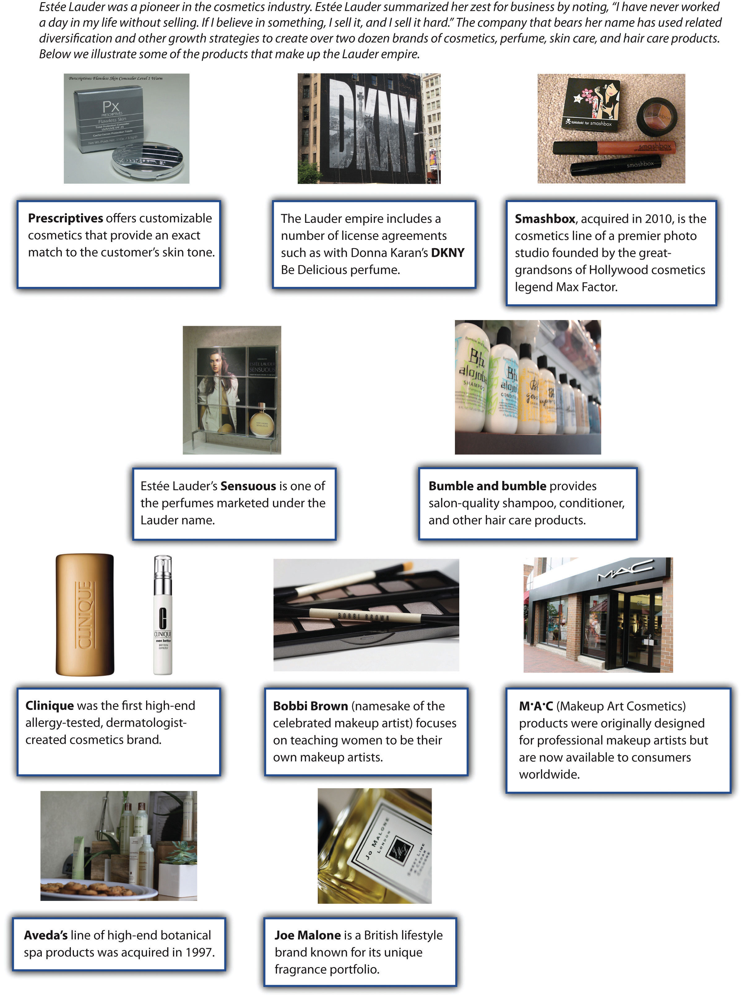

After reading this chapter, you should be able to understand and articulate answers to the following questions:

Walt Disney remains a worldwide icon five decades after his death.
Image courtesy of Wikipedia, http://en.wikipedia.org/wiki/File:Walt_Disney_Snow_white_1937_trailer_screenshot_(13).jpg.
The animated film Cars 2 was released by Pixar Animation Studios in late June 2011. This sequel to the smash hit Cars made $66 million at the box office on its opening weekend and appeared likely to be yet another commercial success for Pixar’s parent corporation, The Walt Disney Company. By the second weekend after its release, Cars 2 had raked in $109 million.
Although Walt Disney was a visionary, even he would have struggled to imagine such enormous numbers when his company was created. In 1923, Disney Brothers Cartoon Studio was started by Walt and his brother Roy in their uncle’s garage. The fledgling company gained momentum in 1928 when a character was invented that still plays a central role for Disney today—Mickey Mouse. Disney expanded beyond short cartoons to make its first feature film, Snow White and the Seven Dwarves, in 1937.
Following a string of legendary films such as Pinocchio (1940), Fantasia (1940), Bambi (1942), and Cinderella (1950), Walt Disney began to diversify his empire. His company developed a television series for the American Broadcasting Company (ABC) in 1954 and opened the Disneyland theme park in 1955. Shortly before its opening, the theme park was featured on the television show to expose the American public to Walt’s innovative ideas. One of the hosts of that episode was Ronald Reagan, who twenty-five years later became president of the United States. A larger theme park, Walt Disney World, was opened in Orlando in 1971. Roy Disney died just two months after Disney World opened; his brother Walt had passed in 1966 while planning the creation of the Orlando facility.
The Walt Disney Company began a series of acquisitions in 1993 with the purchase of movie studio Miramax Pictures. ABC was acquired in 1996, along with its very successful sports broadcasting company, ESPN. Two other important acquisitions were made during the following decade. Pixar Studios was purchased in 2006 for $7.4 billion. This strategic move brought a very creative and successful animation company under Disney’s control. Three years later, Marvel Entertainment was acquired for $4.24 billion. Marvel was attractive because of its vast roster of popular characters, including Iron Man, the X-Men, the Incredible Hulk, the Fantastic Four, and Captain America. In addition to featuring these characters in movies, Disney could build attractions around them within its theme parks.
With annual revenues in excess of $38 billion, The Walt Disney Company was the largest media conglomerate in the world by 2010. It was active in four key industries. Disney’s theme parks included not only its American locations but also joint ventures in France and Hong Kong. A park in Shanghai, China, is slated to open by 2016. The theme park business accounted for 28 percent of Disney’s revenues.
Disney’s presence in the television industry, including ABC, ESPN, Disney Channel, and ten television stations, accounted for 45 percent of revenues. Disney’s original business, filmed entertainment, accounted for 18 percent of revenue. Merchandise licensing was responsible for 7 percent of revenue. This segment of the business included children’s books, video games, and 350 stores spread across North American, Europe, and Japan. The remaining 2 percent of revenues were derived from interactive online technologies. Much of this revenue was derived from Playdom, an online gaming company that Disney acquired in 2010.Standard & Poor’s stock report on The Walt Disney Company.
By mid-2011, questions arose about how Disney was managing one of its most visible subsidiaries. Pixar’s enormous success had been built on creativity and risk taking. Pixar executives were justifiably proud that they made successful movies that most studios would view as quirky and too off-the-wall. A good example is 2009’s Up!, which made $730 million despite having unusual main characters: a grouchy widower, a misfit “Wilderness Explorer” in search of a merit badge for helping the elderly, and a talking dog. Disney executives, however, seemed to be adopting a much different approach to moviemaking. In a February 2011 speech, Disney’s chief financial officer noted that Disney intended to emphasize movie franchises such as Toy Story and Cars that can support sequels and sell merchandise.
When the reviews of Pixar’s Cars 2 came out in June, it seemed that Disney’s preferences were the driving force behind the movie. The film was making money, but it lacked Pixar’s trademark artistry. One movie critic noted, “With Cars 2, Pixar goes somewhere new: the ditch.” Another suggested that “this frenzied sequel seldom gets beyond mediocrity.” A stock analyst that follows Disney perhaps summed up the situation best when he suggested that Cars 2 was “the worst-case scenario.…A movie created solely to drive merchandise. It feels cynical. Parents may feel they’re watching a two-hour commercial.”Stewart, J. B. 2011, June 1. A collision of creativity and cash. New York Times. Retrieved from http://www.nytimes.com/2011/07/02/business/02stewart.html Looking to the future, Pixar executives had to wonder whether their studio could excel as part of a huge firm. Would Disney’s financial emphasis destroy the creativity that made Pixar worth more than $7 billion in the first place? The big picture was definitely unclear.

Will John Lassiter, Pixar’s chief creative officer, be prevented from making more quirky films like Up! by parent company Disney?
Image courtesy of Nicolas Genin, http://upload.wikimedia.org/wikipedia/commons/b/bc/John_Lasseter-Up-66th_Mostra.jpg.
When dealing with corporate-level strategy, executives seek answers to a key question: In what industry or industries should our firm compete? The executives in charge of a firm such as The Walt Disney Company must decide whether to remain within their present domains or venture into new ones. In Disney’s case, the firm has expanded from its original business (films) and into television, theme parks, and several others. In contrast, many firms never expand beyond their initial choice of industry.
For many firms, concentration strategiesActions that firms use to try to compete successfully only within a single industry. are very sensible. These strategies involve trying to compete successfully only within a single industry. McDonald’s, Starbucks, and Subway are three firms that have relied heavily on concentration strategies to become dominant players.
There are three concentration strategies: (1) market penetration, (2) market development, and (3) product development (Figure 8.1 "Concentration Strategies"). A firm can use one, two, or all three as part of their efforts to excel within an industry.Ansoff, H. I. 1957. Strategies for diversification. Harvard Business Review, 35(5), 113–124. Market penetrationAn attempt to gain additional share of existing markets using existing products. involves trying to gain additional share of a firm’s existing markets using existing products. Often firms will rely on advertising to attract new customers with existing markets.
Nike, for example, features famous athletes in print and television ads designed to take market share within the athletic shoes business from Adidas and other rivals. McDonald’s has pursued market penetration in recent years by using Latino themes within some of its advertising. The firm also maintains a Spanish-language website at http://www.meencanta.com; the website’s name is the Spanish translation of McDonald’s slogan “I’m lovin’ it.” McDonald’s hopes to gain more Latino customers through initiatives such as this website.

Nike relies in part on a market penetration strategy within the athletic shoe business.
Image courtesy of Jean-Louis Zimmermann, http://www.flickr.com/photos/jeanlouis_zimmermann/5175647157/sizes/o/in/photostream.
Market developmentTrying to sell existing products within new markets. involves taking existing products and trying to sell them within new markets. One way to reach a new market is to enter a new retail channel. Starbucks, for example, has stepped beyond selling coffee beans only in its stores and now sells beans in grocery stores. This enables Starbucks to reach consumers that do not visit its coffeehouses.

Starbucks’ market development strategy has allowed fans to buy its beans in grocery stores.
Image courtesy of Claire Gribbin, http://en.wikipedia.org/wiki/File:Starbucks_coffee_beans.jpg.
Entering new geographic areas is another way to pursue market development. Philadelphia-based Tasty Baking Company has sold its Tastykake snack cakes since 1914 within Pennsylvania and adjoining states. The firm’s products have become something of a cult hit among customers, who view the products as much tastier than the snack cakes offered by rivals such as Hostess and Little Debbie. In April 2011, Tastykake was purchased by Flowers Foods, a bakery firm based in Georgia. When it made this acquisition, Flower Foods announced its intention to begin extensively distributing Tastykake’s products within the southeastern United States. Displaced Pennsylvanians in the south rejoiced.
Product developmentCreating new products to serve existing markets. involves creating new products to serve existing markets. In the 1940s, for example, Disney expanded its offerings within the film business by going beyond cartoons and creating movies featuring real actors. More recently, McDonald’s has gradually moved more and more of its menu toward healthy items to appeal to customers who are concerned about nutrition.
In 2009, Starbucks introduced VIA, an instant coffee variety that executives hoped would appeal to their customers when they do not have easy access to a Starbucks store or a coffeepot. The soft drink industry is a frequent location of product development efforts. Coca-Cola and Pepsi regularly introduce new varieties—such as Coke Zero and Pepsi Cherry Vanilla—in an attempt to take market share from each other and from their smaller rivals.

Product development is a popular strategy in the soft-drink industry, but not all developments pay off. Coca-Cola Black (a blending of cola and coffee flavors) was launched in 2006 but discontinued in 2008.
Image courtesy of Barry, http://www.flickr.com/photos/buglugs/1536568227/sizes/o/in/photostream.
Seattle-based Jones Soda Co. takes a novel approach to product development. Each winter, the firm introduces a holiday-themed set of unusual flavors. Jones Soda’s 2006 set focus on the flavors of Thanksgiving. It contained Green Pea, Sweet Potato, Dinner Roll, Turkey and Gravy, and Antacid sodas. The flavors of Christmas were the focus of 2007’s set, which included Sugar Plum, Christmas Tree, Egg Nog, and Christmas Ham. In early 2011, Jones Soda let it customers choose the winter 2011 flavors via a poll on its website. The winners were Candy Cane, Gingerbread, Pear Tree, and Egg Nog. None of these holiday flavors are expected to be big hits, of course. The hope is that the buzz that surrounds the unusual flavors each year will grab customers’ attention and get them to try—and become hooked on—Jones Soda’s more traditional flavors.
Rather than rely on their own efforts, some firms try to expand their presence in an industry by acquiring or merging with one of their rivals. This strategic move is known as horizontal integrationPursuing a concentration strategy by acquiring or merging with a rival. (Figure 8.2 "Horizontal Integration"). An acquisitionWhen one company purchases another company. takes place when one company purchases another company. Generally, the acquired company is smaller than the firm that purchases it. A mergerThe joining of two similarly sized companies into one company. joins two companies into one. Mergers typically involve similarly sized companies. Disney was much bigger than Miramax and Pixar when it joined with these firms in 1993 and 2006, respectively, thus these two horizontal integration moves are considered to be acquisitions.
Horizontal integration can be attractive for several reasons. In many cases, horizontal integration is aimed at lowering costs by achieving greater economies of scale. This was the reasoning behind several mergers of large oil companies, including BP and Amoco in 1998, Exxon and Mobil in 1999, and Chevron and Texaco in 2001. Oil exploration and refining is expensive. Executives in charge of each of these six corporations believed that greater efficiency could be achieved by combining forces with a former rival. Considering horizontal integration alongside Porter’s five forces model highlights that such moves also reduce the intensity of rivalry in an industry and thereby make the industry more profitable.
Some purchased firms are attractive because they own strategic resources such as valuable brand names. Acquiring Tasty Baking was appealing to Flowers Foods, for example, because the name Tastykake is well known for quality in heavily populated areas of the northeastern United States. Some purchased firms have market share that is attractive. Part of the motivation behind Southwest Airlines’ purchase of AirTran was that AirTran had a significant share of the airline business in cities—especially Atlanta, home of the world’s busiest airport—that Southwest had not yet entered. Rather than build a presence from nothing in Atlanta, Southwest executives believed that buying a position was prudent.
Horizontal integration can also provide access to new distribution channels. Some observers were puzzled when Zuffa, the parent company of the Ultimate Fighting Championship (UFC), purchased rival mixed martial arts (MMA) promotion Strikeforce. UFC had such a dominant position within MMA that Strikeforce seemed to add very little for Zuffa. Unlike UFC, Strikeforce had gained exposure on network television through broadcasts on CBS and its partner Showtime. Thus acquiring Strikeforce might help Zuffa gain mainstream exposure of its product.Wagenheim, J. 2011, March 12. UFC buys out Strikeforce in another step toward global domination. SI.com. Retrieved from http://sportsillustrated.cnn.com/2011/writers/jeff_wagenheim/03/12/strikeforce-purchased/index.html

The combination of UFC and Strikeforce into one company may accelerate the growing popularity of mixed martial arts.
Image courtesy of hydropeek, http://www.flickr.com/photos/hydropeek/4533084943/sizes/o/in/photostream.
Despite the potential benefits of mergers and acquisitions, their financial results often are very disappointing. One study found that more than 60 percent of mergers and acquisitions erode shareholder wealth while fewer than one in six increases shareholder wealth.Henry, D. 2002, October 14. Mergers: Why most big deals don’t pay off. Business Week, 60–70. Some of these moves struggle because the cultures of the two companies cannot be meshed. This chapter’s opening vignette suggests that Disney and Pixar may be experiencing this problem. Other acquisitions fail because the buyer pays more for a target company than that company is worth and the buyer never earns back the premium it paid.
In the end, between 30 percent and 45 percent of mergers and acquisitions are undone, often at huge losses.Hitt, M. A., Harrison, J. S., & Ireland, R. D. 2001. Mergers and acquisitions: A guide to creating value for stakeholders. New York, NY: Oxford University Press. For example, Mattel purchased The Learning Company in 1999 for $3.6 billion and sold it a year later for $430 million—12 percent of the original purchase price. Similarly, Daimler-Benz bought Chrysler in 1998 for $37 billion. When the acquisition was undone in 2007, Daimler recouped only $1.5 billion worth of value—a mere 4 percent of what it paid. Thus executives need to be cautious when considering using horizontal integration.
When pursuing a vertical integrationWhen a firm gets involved in new portions of the value chain. strategy, a firm gets involved in new portions of the value chain (Figure 8.3 "Vertical Integration at American Apparel"). This approach can be very attractive when a firm’s suppliers or buyers have too much power over the firm and are becoming increasingly profitable at the firm’s expense. By entering the domain of a supplier or a buyer, executives can reduce or eliminate the leverage that the supplier or buyer has over the firm. Considering vertical integration alongside Porter’s five forces model highlights that such moves can create greater profit potential. Firms can pursue vertical integration on their own, such as when Apple opened stores bearing its brand, or through a merger or acquisition, such as when eBay purchased PayPal.
In the late 1800s, Carnegie Steel Company was a pioneer in the use of vertical integration. The firm controlled the iron mines that provided the key ingredient in steel, the coal mines that provided the fuel for steelmaking, the railroads that transported raw material to steel mills, and the steel mills themselves. Having control over all elements of the production process ensured the stability and quality of key inputs. By using vertical integration, Carnegie Steel achieved levels of efficiency never before seen in the steel industry.
Figure 8.3 Vertical Integration at American Apparel

Images courtesy of alossix, http://www.flickr.com/photos/alossix/2588175535/ (top middle), http://www.flickr.com/photos/alossix/2588242383/ (top left), http://www.flickr.com/photos/alossix/2589149772/ (bottom left); Dov Charney, http://www.flickr.com/photos/dovcharney/2885342063/ (top right); Nicolas Nova, http://www.flickr.com/photos/nnova/3399896671/ (background); vmiramontes, http://www.flickr.com/photos/vmiramontes/4376957889/ (bottom right).
Today, oil companies are among the most vertically integrated firms. Firms such as ExxonMobil and ConocoPhillips can be involved in all stages of the value chain, including crude oil exploration, drilling for oil, shipping oil to refineries, refining crude oil into products such as gasoline, distributing fuel to gas stations, and operating gas stations.
The risk of not being vertically integrated is illustrated by the 2010 Deepwater Horizon oil spill in the Gulf of Mexico. Although the US government held BP responsible for the disaster, BP cast at least some of the blame on drilling rig owner Transocean and two other suppliers: Halliburton Energy Services (which created the cement casing for the rig on the ocean floor) and Cameron International Corporation (which had sold Transocean blowout prevention equipment that failed to prevent the disaster). In April 2011, BP sued these three firms for what it viewed as their roles in the oil spill.

The 2010 explosion of the Deepwater Horizon oil rig cost eleven lives and released nearly five million barrels of crude oil into the Gulf of Mexico.
Image courtesy of US Coast Guard, http://en.wikipedia.org/wiki/File:Deepwater_Horizon_offshore_drilling_unit_on_fire_2010.jpg.
Vertical integration also creates risks. Venturing into new portions of the value chain can take a firm into very different businesses. A lumberyard that started building houses, for example, would find that the skills it developed in the lumber business have very limited value to home construction. Such a firm would be better off selling lumber to contractors.
Vertical integration can also create complacency. Consider, for example, a situation in which an aluminum company is purchased by a can company. People within the aluminum company may believe that they do not need to worry about doing a good job because the can company is guaranteed to use their products. Some companies try to avoid this problem by forcing their subsidiary to compete with outside suppliers, but this undermines the reason for purchasing the subsidiary in the first place.
A backward vertical integrationA strategy that involves a buyer entering the industry that it purchases goods or services from. strategy involves a firm moving back along the value chain and entering a supplier’s business. Some firms use this strategy when executives are concerned that a supplier has too much power over their firms. In the early days of the automobile business, Ford Motor Company created subsidiaries that provided key inputs to vehicles such as rubber, glass, and metal. This approach ensured that Ford would not be hurt by suppliers holding out for higher prices or providing materials of inferior quality.

To ensure high quality, Ford relied heavily on backward vertical integration in the early days of the automobile industry.
Image courtesy of Ford Corporation, http://en.wikipedia.org/wiki/File:Ford_1939.jpg.
Although backward vertical integration is usually discussed within the context of manufacturing businesses, such as steelmaking and the auto industry, this strategy is also available to firms such as Disney that compete within the entertainment sector. ESPN is a key element of Disney’s operations within the television business. Rather than depend on outside production companies to provide talk shows and movies centered on sports, ESPN created its own production company. ESPN Films is a subsidiary of ESPN that was created in 2001. ESPN Films has created many of ESPN’s best-known programs, including Around the Horn and Pardon the Interruption. By owning its own production company, ESPN can ensure that it has a steady flow of programs that meet its needs.
A forward vertical integrationA strategy that involves a supplier entering the industry that it supplies inputs to. strategy involves a firm moving further down the value chain to enter a buyer’s business. Disney has pursued forward vertical integration by operating more than three hundred retail stores that sell merchandise based on Disney’s characters and movies. This allows Disney to capture profits that would otherwise be enjoyed by another store. Each time a Hannah Montana book bag is sold through a Disney store, the firm makes a little more profit than it would if the same book bag were sold by a retailer such as Target.
Forward vertical integration also can be useful for neutralizing the effect of powerful buyers. Rental car agencies are able to insist on low prices for the vehicles they buy from automakers because they purchase thousands of cars. If one automaker stubbornly tries to charge high prices, a rental car agency can simply buy cars from a more accommodating automaker. It is perhaps not surprising that Ford purchased Hertz Corporation, the world’s biggest rental car agency, in 1994. This ensured that Hertz would not drive too hard of a bargain when buying Ford vehicles. By 2005, selling vehicles to rental car companies had become less important to Ford and Ford was struggling financially. The firm then reversed its forward vertical integration strategy by selling Hertz.
eBay’s purchase of PayPal and Apple’s creation of Apple Stores are two recent examples of forward vertical integration. Despite its enormous success, one concern for eBay is that many individuals avoid eBay because they are nervous about buying and selling goods online with strangers. PayPal addressed this problem by serving, in exchange for a fee, as an intermediary between online buyers and sellers. eBay’s acquisition of PayPal signaled to potential customers that their online transactions were completely safe—eBay was now not only the place where business took place but eBay also protected buyers and sellers from being ripped off.
Apple’s ownership of its own branded stores set the firm apart from computer makers such as Hewlett-Packard, Acer, and Gateway that only distribute their products through retailers like Best Buy and Office Depot. Employees at Best Buy and Office Depot are likely to know just a little bit about each of the various brands their store carries.
In contrast, Apple’s stores are popular in part because store employees are experts about Apple products. They can therefore provide customers with accurate and insightful advice about purchases and repairs. This is an important advantage that has been created through forward vertical integration.
Firms using diversification strategiesInvolve a firm entering entirely new industries. enter entirely new industries. While vertical integration involves a firm moving into a new part of a value chain that it is already is within, diversification requires moving into new value chains. Many firms accomplish this through a merger or an acquisition, while others expand into new industries without the involvement of another firm.
A proposed diversification move should pass three tests or it should be rejected.Porter, M. E. 1987. From competitive advantage to corporate strategy. Harvard Business Review, 65(3), 102–121.
Related diversificationWhen a firm moves into a new industry that has important similarities with the firm’s existing industry or industries. occurs when a firm moves into a new industry that has important similarities with the firm’s existing industry or industries (Figure 8.4 "The Sweet Fragrance of Success: The Brands That “Make Up” the Lauder Empire"). Because films and television are both aspects of entertainment, Disney’s purchase of ABC is an example of related diversification. Some firms that engage in related diversification aim to develop and exploit a core competencyA skill set that is difficult for competitors to imitate, can be leveraged in different businesses, and contributes to the benefits enjoyed by customers within each business. to become more successful. A core competency is a skill set that is difficult for competitors to imitate, can be leveraged in different businesses, and contributes to the benefits enjoyed by customers within each business.Prahalad, C. K., & Hamel, G. 1990. The core competencies of the corporation. Harvard Business Review, 86(1), 79–91. For example, Newell Rubbermaid is skilled at identifying underperforming brands and integrating them into their three business groups: (1) home and family, (2) office products, and (3) tools, hardware, and commercial products.
Figure 8.4 The Sweet Fragrance of Success: The Brands That “Make Up” the Lauder Empire
Images courtesy of Betsy Weber, http://www.flickr.com/photos/betsyweber/5915582379/ (fourth row left); ookikioo, http://www.flickr.com/photos/ookikioo/856924791/ (third row middle); Shotcuts Software, http://www.flickr.com/photos/57283318@N07/5303842500/ (second row right); Joanne Saige Lee, http://www.flickr.com/photos/crystalliferous/3024189623/sizes/m/in/photostream/, http://www.flickr.com/photos/crystalliferous/3025018504/sizes/m/in/photostream/ (third row left); Jessica Sheridan, http://www.flickr.com/photos/16353290@N00/4043846042/ (first row middle); daveynin, http://www.flickr.com/photos/daveynin/2726423708/ (second row left); Handmade Image, http://www.flickr.com/photos/33707373@N03/4643563760/ (fourth row right); Church Street Marketplace, http://www.flickr.com/photos/churchstreetmarketplace/4180164459/ (third row right); ookikioo, http://www.flickr.com/photos/ookikioo/314692747/sizes/m/in/photostream/ (first row left); Liane Chan, http://www.flickr.com/photos/porcupiny/1926961411/sizes/o/in/photostream/ (first row right).
Honda Motor Company provides a good example of leveraging a core competency through related diversification. Although Honda is best known for its cars and trucks, the company actually started out in the motorcycle business. Through competing in this business, Honda developed a unique ability to build small and reliable engines. When executives decided to diversify into the automobile industry, Honda was successful in part because it leveraged this ability within its new business. Honda also applied its engine-building skills in the all-terrain vehicle, lawn mower, and boat motor industries.
Honda’s related diversification strategy has taken the firm into several businesses, including boat motors.
Image courtesy of Wikimedia, http://upload.wikimedia.org/wikipedia/en/5/53/Hondaoutboard.jpg.
Sometimes the benefits of related diversification that executives hope to enjoy are never achieved. Both soft drinks and cigarettes are products that consumers do not need. Companies must convince consumers to buy these products through marketing activities such as branding and advertising. Thus, on the surface, the acquisition of 7Up by Philip Morris seemed to offer the potential for Philip Morris to take its existing marketing skills and apply them within a new industry. Unfortunately, the possible benefits to 7Up never materialized.
Why would a soft-drink company buy a movie studio? It’s hard to imagine the logic behind such a move, but Coca-Cola did just this when it purchased Columbia Pictures in 1982 for $750 million. This is a good example of unrelated diversificationWhen a firm enters an industry that lacks any important similarities with the firm’s existing industry or industries., which occurs when a firm enters an industry that lacks any important similarities with the firm’s existing industry or industries (Figure 8.5 "Unrelated Diversification at Berkshire Hathaway"). Luckily for Coca-Cola, its investment paid off—Columbia was sold to Sony for $3.4 billion just seven years later.
Most unrelated diversification efforts, however, do not have happy endings. Harley-Davidson, for example, once tried to sell Harley-branded bottled water. Starbucks tried to diversify into offering Starbucks-branded furniture. Both efforts were disasters. Although Harley-Davidson and Starbucks both enjoy iconic brands, these strategic resources simply did not transfer effectively to the bottled water and furniture businesses.
Lighter firm Zippo is currently trying to avoid this scenario. According to CEO Geoffrey Booth, the Zippo is viewed by consumers as a “rugged, durable, made in America, iconic” brand.http://th2010.townhall.com/news/us/2011/03/20/zippos_burning_ambition_lies_in_ retail_expansion. This brand has fueled eighty years of success for the firm. But the future of the lighter business is bleak. Zippo executives expect to sell about 12 million lighters this year, which is a 50 percent decline from Zippo’s sales levels in the 1990s. This downward trend is likely to continue as smoking becomes less and less attractive in many countries. To save their company, Zippo executives want to diversify.
The durability of Zippo’s products is illustrated by this lighter, which still works despite being made in 1968.
Image courtesy of David J. Fred, http://upload.wikimedia.org/wikipedia/commons/9/97/Zippo-Slim-1968-Lit.jpg.
In particular, Zippo wants to follow a path blazed by Eddie Bauer and Victorinox Swiss Army Brands Inc. The rugged outdoors image of Eddie Bauer’s clothing brand has been used effectively to sell sport utility vehicles made by Ford. The high-quality image of Swiss Army knives has been used to sell Swiss Army–branded luggage and watches. As of March 2011, Zippo was examining a wide variety of markets where their brand could be leveraged, including watches, clothing, wallets, pens, liquor flasks, outdoor hand warmers, playing cards, gas grills, and cologne. Trying to figure out which of these diversification options would be winners, such as the Eddie Bauer-edition Ford Explorer, and which would be losers, such as Harley-branded bottled water, was a key challenge facing Zippo executives.
In Good Company
What do Techline cell phones, Sports America magazine, and Crispity Crunch cereals have in common? Not much, but that did not stop Globodyne from buying each of these companies in its quest for synergy in the 2004 movie In Good Company. Executive Carter Duryea was excited when his employer Globodyne purchased Waterman Publishing, the owner of Sports America magazine. The acquisition landed him a big promotion and increased his salary to “Porsche-leasing” size.
Synergy is created when two or more businesses produce benefits together that could not be produced separately. While Duryea was confident that a cross-promotional strategy between his advertising division and the other units within the Globodyne universe was a slam-dunk, Waterman employee Dan Foreman saw little congruence between advertisements in Sports America on the one hand and cell phones and breakfast cereals on the other. Despite his considerable efforts, Duryea was unable to increase ad pages in Sports America because the unrelated nature of Globodyne’s other business units inhibited his strategy of creating synergy. Seeing little value in owning a failing publishing company, Globodyne promptly sold the division to another conglomerate. After the sale, the executives that had been rewarded for the initial purchase of Waterman Publishing, including Duryea, were fired.
Globodyne’s inability to successfully manage Waterman Publishing illustrates the difficulties associated with unrelated diversification. While buying companies outside a parent company’s core competencies can increase the size of the company and in turn its executives’ bank accounts, managing firms unfamiliar to management is generally a risky and losing proposition. Decades of research on strategic management suggest that when firms diversify, it is best to “stick to the knitting.” That is, stay with businesses executives are familiar with and avoid moving into ventures where little expertise exists.
In Good Company starred Topher Grace as ill-fated junior executive Carter Duryea.
Image courtesy of David Shankbone, http://en.wikipedia.org/wiki/File:Topher_Grace_by_David_Shankbone.jpg.
“In what industry or industries should our firm compete?” is the central question addressed by corporate-level strategy. In some cases, the answer that executives arrive at involves exiting one or more industries.
In the early twentieth century, many military battles were fought in series of parallel trenches. If an attacking army advanced enough to force a defending army to abandon a trench, the defenders would move back to the next trench and try to refortify their position. This small retreat was preferable to losing the battle entirely. Trench warfare inspired the business term retrenchmentReducing the size of part of a firm’s operations, often though laying off employees.. Firms following a retrenchment strategy shrink one or more of their business units. Much like an army under attack, firms using this strategy hope to make just a small retreat rather than losing a battle for survival.
Retrenchment is often accomplished through laying off employees. In July 2011, for example, South African grocery store chain Pick n Pay announced plans to release more than 3,000 of its estimated 36,000 workers. Just over a month earlier, South African officials had approved Walmart’s acquisition of a leading local retailer called Massmart. Rivalry in the South African grocery business seemed likely to become fiercer, and Pick n Pay executives needed to cut costs for their firm to remain competitive.
A Pick n Pay executive explained the layoffs by noting that “the decision was not taken lightly but was required to ensure the viability of the retail business and its employees into the future.”Chilwane, L. 2011, July 7. Pick n Pay to retrench. The New Age. Retrieved from http://www.thenewage.co.za/22462-1025-53-Pick_n_Pay_to_retrench This is a common rationale for retrenchment—by shrinking the size of a firm, executives hope that the firm can survive as a profitable enterprise. Without becoming smaller and more cost effective, Pick n Pay and other firms that use retrenchment can risk total failure.

The term retrenchment has its origins in trench warfare, which is shown in this World War I photo taken in France.
Image courtesy of Lt. J. W. Brooke, http://en.wikipedia.org/wiki/File:Cheshire_Regiment_trench_Somme_1916.jpg.
Executives sometimes decide that bolder moves than retrenchment are needed for their firms to be successful in the future. DivestmentSelling off part of a firm’s operations. refers to selling off part of a firm’s operations. In some cases, divestment reverses a forward vertical integration strategy, such as when Ford sold Hertz. Divestment can also be used to reverse backward vertical integration. General Motors (GM), for example, turned a parts supplier called Delphi Automotive Systems Corporation from a GM subsidiary into an independent firm. This was done via a spin-offCreating a new company whose stock is owned by investors out of a piece of a bigger company., which involves creating a new company whose stock is owned by investors (Figure 8.6 "Spin Offs"). GM stockholders received 0.69893 shares of Delphi for every share of stock they owned in GM. A stockholder who owned 100 shares of GM received 69 shares of the new company plus a small cash payment in lieu of a fractional share.
Divestment also serves as a means to undo diversification strategies. Divestment can be especially appealing to executives in charge of firms that have engaged in unrelated diversification. Investors often struggle to understand the complexity of diversified firms, and this can result in relatively poor performance by the stocks of such firms. This is known as a diversification discountThe tendency of investors to undervalue the shares of a diversified firm.. Executives sometimes attempt to unlock hidden shareholder value by breaking up diversified companies.
Fortune Brands provides a good example. Surprisingly, this company does not own Fortune magazine, but it has been involved in a diverse set of industries. As of 2010, the firm consisted of three businesses: spirits (including Jim Beam and Maker’s Mark), household goods (including Masterlock and Moen Faucets), and golf equipment (including Titleist clubs and balls as well as FootJoy shoes). In December 2010, Fortune Brand’s CEO announced a plan to separate the three businesses to “maximize long-term value for our shareholders and to create exciting opportunities within our businesses.”Sauerhaft, R. 2011, May 20. Fortune Brands to sell Titleist and FootJoy to Fila Korea. Golf.com. Retrieved from http://www.golf.com/golf/tours_news/article/0,28136,2073173,00.html#ixzz1MvXStp2b Fortune Brands took the first step toward overcoming the diversification discount in May 2011 when it reached an agreement to sell its gold business to Fila. In June 2011, plans to spin offCreating a new company whose stock is owned by investors out of a piece of a bigger company. the home products business were announced.

Fortune Brands hopes to unlock hidden shareholder value by divesting unrelated brands such as Masterlock.
Image courtesy of Thegreenj, http://upload.wikimedia.org/wikipedia/commons/a/a1/Masterpadlock.jpg.
Executives are sometimes forced to admit that the operations that they want to abandon have no value. If selling off part of a business is not possible, the best option may be liquidationShutting down portions of a firm’s operations, often at a tremendous financial loss.. This involves simply shutting down portions of a firm’s operations, often at a tremendous financial loss. GM has done this by scrapping its Geo, Saturn, Oldsmobile, and Pontiac brands. Ford recently followed this approach by shutting down its Mercury brand. Such moves are painful because massive investments are written off, but becoming “leaner and meaner” may save a company from total ruin.
Executives in charge of firms involved in many different businesses must figure out how to manage such portfolios. General Electric (GE), for example, competes in a very wide variety of industries, including financial services, insurance, television, theme parks, electricity generation, lightbulbs, robotics, medical equipment, railroad locomotives, and aircraft jet engines. When leading a company such as GE, executives must decide which units to grow, which ones to shrink, and which ones to abandon.
Portfolio planningA process that helps executives make decisions involving their firms’ various industries. can be a useful tool. Portfolio planning is a process that helps executives assess their firms’ prospects for success within each of its industries, offers suggestions about what to do within each industry, and provides ideas for how to allocate resources across industries. Portfolio planning first gained widespread attention in the 1970s, and it remains a popular tool among executives today.
The Boston Consulting Group (BCG) matrix is the best-known approach to portfolio planning (Figure 8.7 "The Boston Consulting Group (BCG) Matrix"). Using the matrix requires a firm’s businesses to be categorized as high or low along two dimensions: its share of the market and the growth rate of its industry. High market share units within slow-growing industries are called cash cowsHigh market share units within slow-growing industries.. Because their industries have bleak prospects, profits from cash cows should not be invested back into cash cows but rather diverted to more promising businesses. Low market share units within slow-growing industries are called dogsLow market share units within slow-growing industries.. These units are good candidates for divestment. High market share units within fast-growing industries are called starsHigh market share units within fast-growing industries.. These units have bright prospects and thus are good candidates for growth. Finally, low-market-share units within fast-growing industries are called question marksLow market share units within fast-growing industries.. Executives must decide whether to build these units into stars or to divest them.

Owning a puppy is fun, but companies may want to avoid owning units that are considered to be dogs.
Photo courtesy of D. Ketchen.
The BCG matrix is just one portfolio planning technique. With the help of a leading consulting firm, GE developed the attractiveness-strength matrix to examine its diverse activities. This planning approach involves rating each of a firm’s businesses in terms of the attractiveness of the industry and the firm’s strength within the industry. Each dimension is divided into three categories, resulting in nine boxes. Each of these boxes has a set of recommendations associated with it.
Although portfolio planning is a useful tool, this tool has important limitations. First, portfolio planning oversimplifies the reality of competition by focusing on just two dimensions when analyzing a company’s operations within an industry. Many dimensions are important to consider when making strategic decisions, not just two. Second, portfolio planning can create motivational problems among employees. For example, if workers know that their firm’s executives believe in the BCG matrix and that their subsidiary is classified as a dog, then they may give up any hope for the future. Similarly, workers within cash cow units could become dismayed once they realize that the profits that they help create will be diverted to boost other areas of the firm. Third, portfolio planning does not help identify new opportunities. Because this tool only deals with existing businesses, it cannot reveal what new industries a firm should consider entering.
This chapter explains corporate-level strategy. Executives grappling with corporate-level strategy must decide in what industry or industries their firms will compete. Many of the possible answers to this question involve growth. Concentration strategies involve competing within existing domains to expand within those domains. This can take the form of market penetration, market development, or product development. Integration involves expanding into new stages of the value chain. Backward integration occurs when a firm enters a supplier’s business while forward vertical integration occurs when a firm enters a customer’s business. Diversification involves entering entirely new industries; this can be an industry that is related or unrelated to a firm’s existing activities. Sometimes being smart about corporate-level strategy requires shrinking the firm through retrenchment or restructuring. Finally, portfolio planning can be useful for analyzing firms that participate in a wide variety of industries.